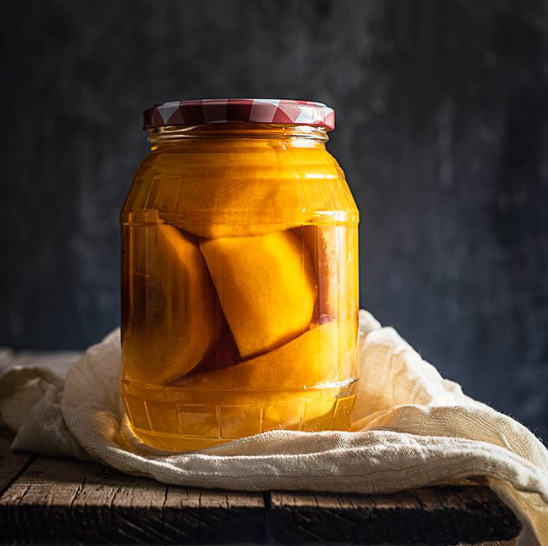

MELOCOTON EN ALMIBAR
Ingredientes:
- 2 kg de melocotones.
- 2 litros de agua.
- 1 kg de azúcar.
- Zumo de medio limón.
Preparación:
- Lo primero es esterilizar los botes, sobre todo si lo que vamos es hacer conserva, para ello, o bien podemos aprovechar el lavavajillas, en el caso de que lo tengamos que poner o bien los pondremos a cocer, vacíos y destapados durante 10 minutos, de este modo tendremos nuestros botes listos.
- Para que los melocotones nos salgan mitades completas, los he lavado muy bien, con piel, secado un poco, he realizado un corte por todo el perímetro del melocotón, llegando hasta el hueso y una vez hecho esto, haciendo presión con las manos hacia diferentes extremos, como si lo estrujásemos, se ha separado, quedando el hueso en una de las mitades y la otra completamente limpio.
- Solo nos queda retirar el hueso de la mitad en la que ha quedado y pelarlos.
- Ponemos en azúcar, el agua y el zumo del limón en un cazo a calentar a fuego medio, y cuando comience a hervir, lo dejaremos 10 minutos, para obtener un almíbar suave.
- Cuando el almíbar esté listo, lo que tenemos que hacer es verterlo en nuestro melocotones hasta que queden cubiertos y dejarlos reposar unas 3 horas.
- Pasado este tiempo, es el momento de poner nuestros melocotones, solo los melocotones, en los tarros de cristal, que yo he usado de 1 litro, quedando el mayor espacio posible de nuestro tarro lleno de melocotones.
- El almíbar lo vamos a poner de nuevo a hervir 5 minutos más, para ponerlo caliente en el interior de nuestros tarros.
- Cubrimos los melocotones con el almibar, hasta arriba del tarro, y tapamos.
- Aquí tenemos dos opciones: Si es algo que vamos a consumir en poco tiempo, máximo un mes, lo que haremos es ponerlos los tarros en caliente boca abajo, para crear un vacío, hasta que se enfríen. Si por el contrario hacemos conserva para más tiempo, pondremos los tarros al baño maría, cubriéndolos de agua y cociendo durante 25 minutos. De este modo aguanta 1 años sin problema.
